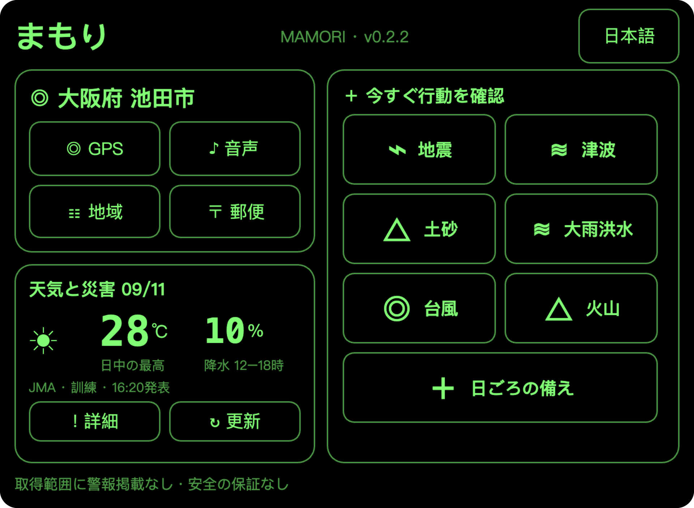
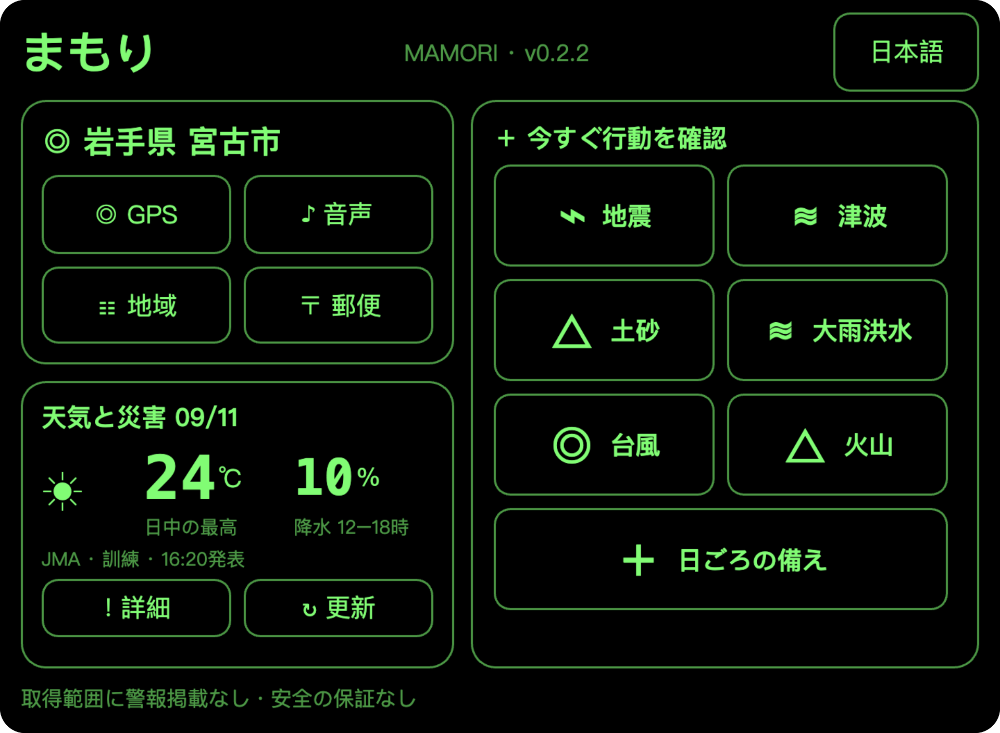
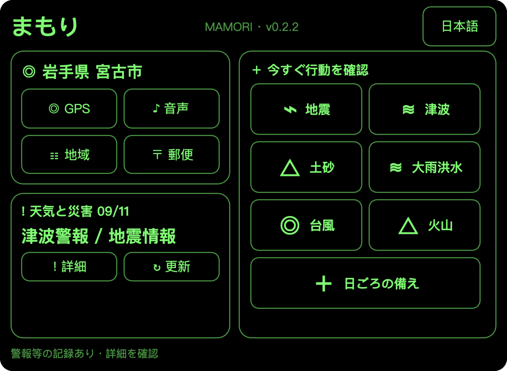
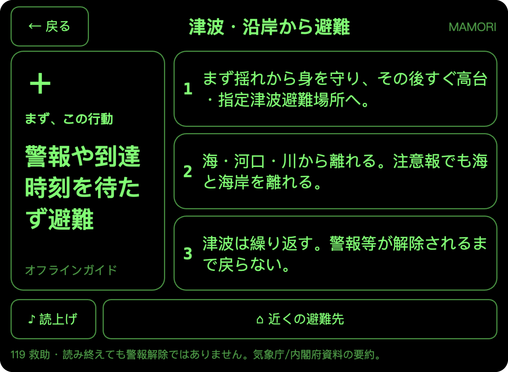
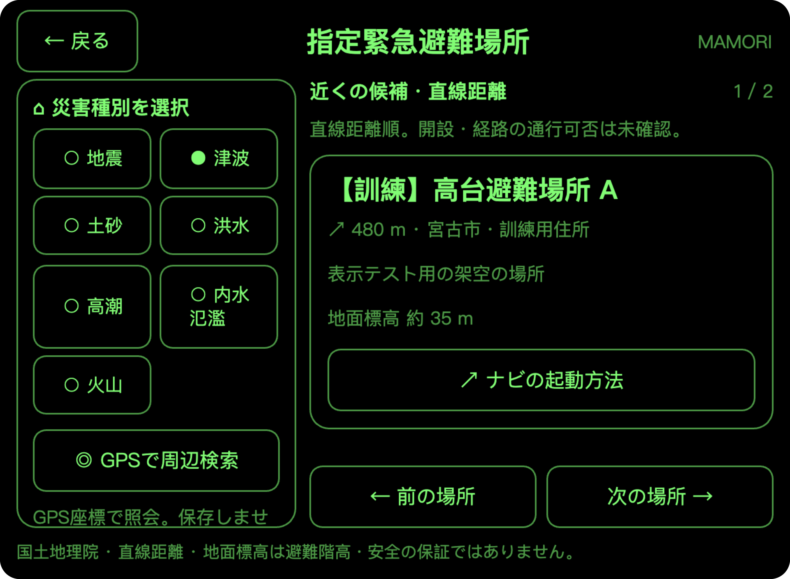
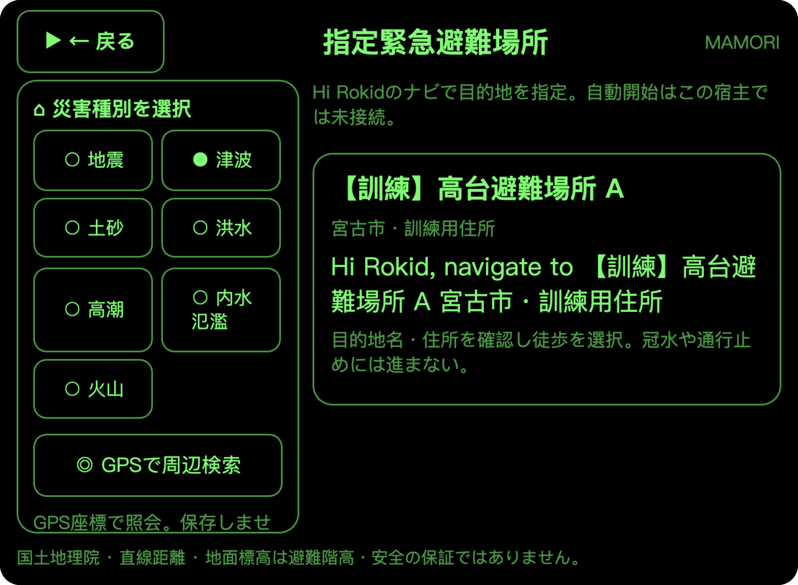

守
まもり MAMORIRokid Glasses 向け防災エージェント
実際の Ink 画面で紹介する、開発中の試作版
ふだんは天気。
いざという時は、
行動を確認。
いまいる地域の情報から、災害別の行動ガイド、避難先の確認まで。まもりが必要な情報を一画面にまとめます。

地域に合わせて
市町村を確認し、沿岸は別途確認。
一画面にまとめて
最初の行動と３つの要点。
日本語・中国語
７種類のガイドを端末内に収録。
LOCATION
必要な情報を、いまいる場所から。
GPS・音声や住所・地域一覧・郵便番号から市町村を確認。日常は天気を見ながら、災害時への備えを確認できます。
GPS
現在地の候補を確認
音声・住所
地名や住所から探す
地域一覧
都道府県から選ぶ
郵便番号
候補の市町村を確認
HOME → ALERT
災害情報を受け取ると、
ホームの表示が切り替わる。
地域に合った情報を取得すると、気温や降水確率の表示が災害名に切り替わります。新しく取得した重大な通報は、条件を満たすと詳細画面を自動で開きます。
ふだんのホーム天気と日ごろの備え

災害情報を表示したホーム津波・地震の訓練

天気の数値 → 災害名場所とガイドはそのまま通報の詳細へ
災害時のホームは自動遷移前を一時停止して撮影。現在の前面表示で約１分ごとに確認する仕組みで、秒単位の緊急地震速報ではありません。
ACTION GUIDE
最初にすることを、一画面で。
状況に合ったガイドを開き、最初の行動と重要な３つの要点を確認。日本語・中国語を切り替えられます。

最初の行動を大きく表示
何を優先するかを短い言葉で確認。
要点を同じ画面に
手動でページをめくらずに確認。
ガイドは端末内に収録
情報の取得が難しい時も、基本の行動を確認。
地震津波土砂災害大雨・洪水・高潮台風・暴風火山日ごろの備え
SHELTER → NAVIGATION HANDOFF
災害に合う避難先を探し、
ナビへの引き継ぎを確認。
実際の災害種別を選び、周辺の指定緊急避難場所を検索。候補の名称・住所・直線距離を確認してから、Hi Rokid で目的地を指定する方法を表示します。
避難場所の候補を確認

目的地をナビへ引き継ぐ

掲載地点・距離・標高は訓練用の架空データです。実際の避難先や安全な経路を示していません。ナビの自動起動は未接続で、目的地情報と起動方法の案内を表示します。
PRODUCT STATUS
できることと、これからの検証。
実装済みの画面・機能
所在地の確認／天気・災害情報の表示
日本語・中国語の行動ガイド
災害別の避難場所検索／ナビへの引き継ぎ案内
接続・検証が必要な項目
本番の災害情報サービスと眼鏡実機
バックグラウンド通知の確実な配信
秒単位の緊急地震速報／ナビの自動起動